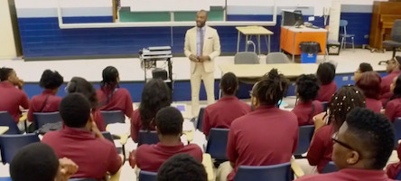

My Skin is the Same Color in Every Language
Medium Blog Post, Feb 23, 2019
Illustration by Me
In Bogota, the capital of Colombia, a man on the corner said the last thing I thought I’d hear.
Education Should Be More Creative
Ideas for Online Learning, Sep 23, 2020

Me at a Student Orientation
Before the pandemic it had become a common phrase in edcation: "School hasn't changed much in the last hundred years. I've been working with some students in my community in some exciting ways. To learn about them click the link to learn more. video.